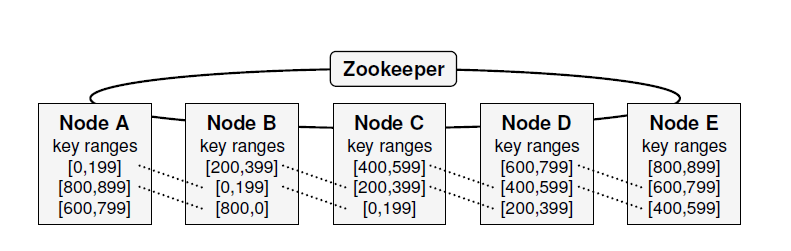
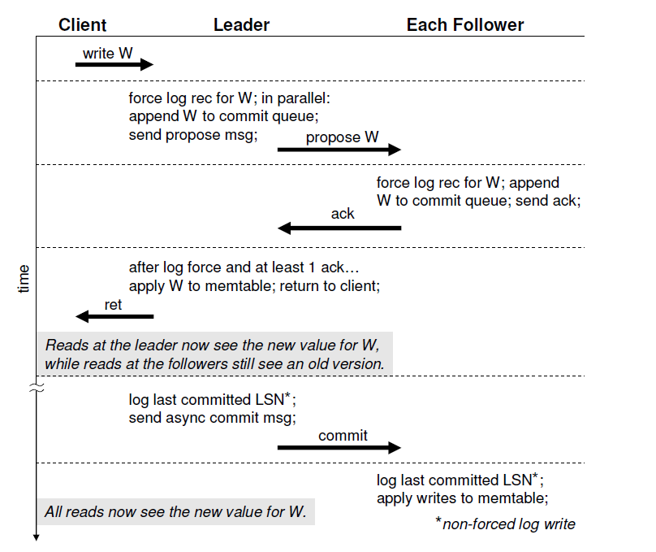
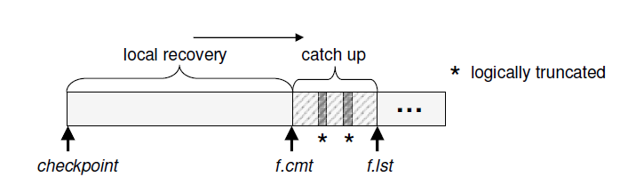
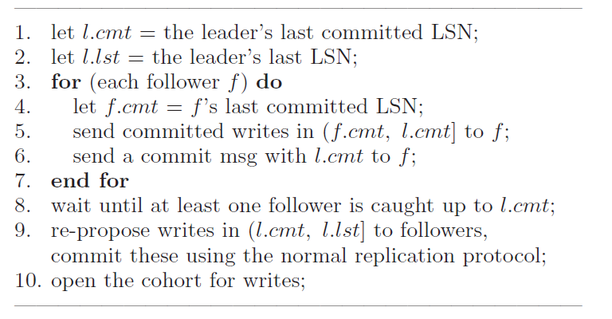
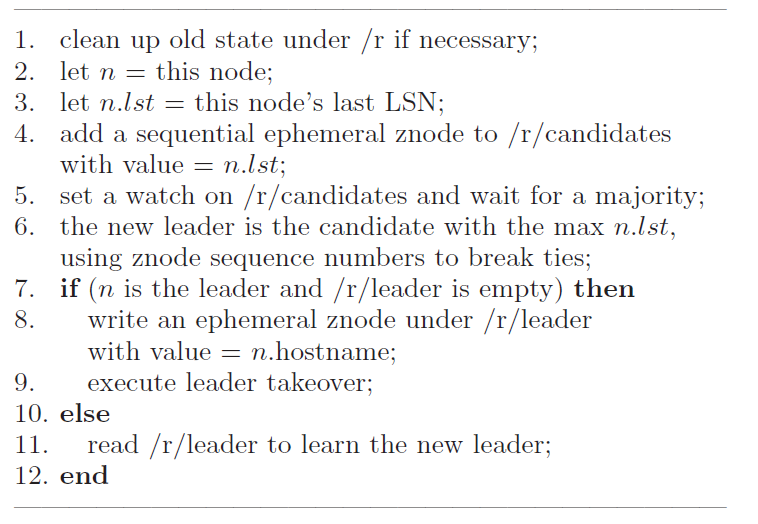
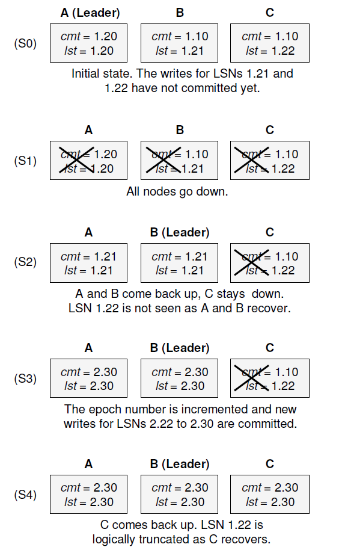

在lab3中我们实现了一个分布式键值数据库，提供容错机制，但是并未实现真正的分布式机制，因为在lab3键值数据库的架构中，所有与client交互的操作都放在leader这台服务器上，在实际应用中这会导致热点问题。所谓热点问题，就是有成千上万的请求并发的访问同一台服务器，使得这台服务器的等待队列非常长，导致响应时间延长。一个非常直接的解决方法，就是将访问分流到其他服务器上，减缓leader服务器的压力，但这有一个很严重的问题，如何保证其他服务器上的内容是最新的？而且这种划分方式，仅仅只能将读请求划分到其他服务器上，写请求仍然是必须放到leader服务器上保证写操作的顺序性，因此，如果有成千上万的写操作并发到来，还是会造成热点问题。
而这篇论文，就是提出了一个解决上述热点问题的方法（我看的论文少，不确定是不是本文第一个提出的，不过本文的内容的确是解决热点问题）。简单来说，假设键值数据库的键是一个集合，那么将这个集合根据某种方式（范围或者哈希算法）划分成互不重叠的几个部分，且这几个部分加起来等于集合本身（我记得有个专业术语，不过一时间想不起来）,论文里将这些被划分的部分称为shrd。将这几个部分分别放到不同的集群上进行同步，每个leader/follower集群负责同步缓存处理分配到的shard，如此一来，可以将读写压力分流到不同的服务器上，提高集群的响应能力和容错能力。比如，假设键值范围是26个字母，spinnaker的做法，就是将这26个字母分配到26个的集群上，由这26个集群分别维护对应字母的读写请求。其实就是一致性哈希的想法。
总体架构
首先由谁来划分shard？或者说，当有新的节点加入，或者现有节点离开时，如何管理shard迁移或者同步复制？这点论文里似乎没有细说，论文的重点在于每个负责每个shard的集群的日志同步和leader竞选机制，关于shard分配和迁移的策略似乎没讲多少，关于这部分内容，可以参考下一致性哈希。
现在，假定已经给每个shard划分好了相应的集群，在这里，简单介绍下spinnaker中集群和机器的含义。集群是负责某个shard的机器集合，而机器则是具体执行shard中的指令，持久化日志的节点，值得注意的是，每个机器会保存多个shard的数据，也就是说，每个机器会对应多个集群！具体的架构图如下：

从上图可以看出，一个shard缓存到三台机器中，而机器则保存多个shard的数据。管理同一个shard的机器所组成的集群被称为cohort。
针对每个shard，至少会有三台服务器负责这个shard的同步缓存，可以把这三台服务器看成是lab3中的一个KV数据库实例。同样会有一个leader和两个follower，leader负责响应client的请求，follower负责同步日志，提供容错机制，在leader宕机后及时顶上。
上图中有一个zookeeper和所有机器节点连接在一起，但实际上，zookeeper并不负责传递读写操作，一般情况下，zookeeper与节点之间唯一交换的信息是心跳信号，用于判断节点是否存活。在这里zookeeper的作用主要是用于每个cohort的leader选举，具体看下文。
日志复制
对于每个shard里的集群，日志复制和raft类似。
- leader从client处接收到信息，附上一些必要的内容生成新的日志，持久化日志到磁盘，然后将日志发送到follower。
- follower接收到新日志，持久化到磁盘，给leader发送确认信息。
- leader收到过半数follower的确认信息后，执行日志，并回复client。
- leader周期性的给follower发送commit信息，督促follower commit相应的日志。

日志结构
在讲对应每个shard的leader选举之前，我们先了解一下spinnaker中的日志结构。
spinnaker中，一个日志有两部分组成：
- 该日志对应的shard组号：上面已经提到，由于每个机器会同时属于多个cohort，同时保存多个shard的日志，因此为了区分日志以及复用同一个日志编号，每个日志必须含有该日志所属shard的信息。
- 该日志在这个shard中的编号LSN：用于索引某机器保存的对应某shard的最大日志编号，用于leader选举。此编号同样分为两部份，举个例子，假如这个编号是8位，那么高4位用于保存term（raft中的任期），低四位用于保存对应该任期的编号。比如一个日志所属任期是1，对应编号是3，那么其LSN为（00010011）2=(19)10。注意，低四位跨任期单调递增，比如某LSN=1.21，当提升到任期2后，低四位并不会清零，而是从2.22开始，这样便于同步日志。
和raft类似，每个机器会为其所保存的每个shard定义两个数字：lst和cmt。lst代表该机器所持久化的对应某shard的最后一条日志，cmt代表该机器所提交的对应某shard的最后一条日志。熟悉raft的朋友很轻易的就能理解lst和cmt的差别。
不论什么节点，当接受到日志时，首先持久化磁盘，当确定可以commit时，将会写入到内存中的memtable，当内存中的memtable的大小达到一定阈值时，会将这个memtable以SSTable的形式写入到磁盘中，节省内存。
日志恢复
本节讲述当节点宕机后，从持久化数据中恢复日志和状态的策略。
follower
对于follower来说，当其从宕机中恢复时，首先加载磁盘中持久化的数据，执行直到cmt前的所有日志。而对于cmt和lst之间的日志，由于这部分日志尚未commit，所以可能会和leader之间存在差异，因此follower会给leader发送自己的cmt，leader会回复自己cmt之前的所有日志给follower，在follower和leader完全同步之前，leader不会给follower发送新的日志同步。
实际应用中，由于follower所需要的日志可能已经被leader写入到磁盘的SSTable中了，这种情况下，leader会找到合适的SSTable发送给follower。
follower日志的逻辑截断
节点宕机恢复后，为了保证一致性，最好应该将cmt和lst之间的日志给清楚掉，防止下一次的恢复会执行这些日志。一个最简单的方法，就是将日志截断到cmt处，抛弃cmt之后的所有日志，然而这样是不行的。由于一个机器节点同时属于多个cohort，并且多个shard的日志会按机器接收到的顺序放在同一个表里（为了减少磁盘读写的次数）。因此某个shard的cmt之后的日志中，可能包含其他shard需要执行的日志。解决这个问题的方法很简单，在磁盘中维护一个表格，记录每个shard的cmt和lst值，那么当节点宕机恢复时，会将读取这个表格，忽略掉所有cmt和lst中的日志。这个操作称为逻辑截断。

Leader takeover
当选出新leader后，新leader会按照以下操作来同步日志
- 令l.cmt为leader最后一条提交的日志。
- 令l.lst为leader最后一条收到的日志。
- 对于每个follower：
- 令f.cmt为follower最后一条提交的日志。
- leader将处于(f.cmt, l.cmt]中的日志发送给follower。
- leader发送提交信号给follower促使follower执行新收到的日志。
- 等待超半数的follower和leader的cmt日志同步。
- leader使用正常的日志同步方式，同步(l.cmt, l.lst]中的日志。
- 开始接受新的写操作。

Leader竞选
前面说到，zookeeper管理cohort的leader选举。具体来说，zookeeper会给每个shard分配一个文件路径，对应的cohort的信息会放在所属的shard目录下。假设此时对应于键范围r的cohort中的leader宕机，follower触发了一次选举：
- follower清除zookeeper下/r目录的内容，删掉旧leader的信息，开始新一轮选举。
- follower将自己最后一个接收到的日志编号lst放在/r/candidates下，然后不断访问该文件夹，等待选举结果。
- 当超过半数节点都将自己的lst放在/r/candidates后，lst最大的节点成为新leader。
- 新leader将自己的信息（比如ip地址）放到/r/leader下，开始新的leader takeover。
- 其他follower从/r/leader中获知新leader的信息。

例子
- S0阶段：
- A是leader，任期是1，提交和接收到的最后一条日志是20。
- B任期是1，cmt是10，lst是21。
- C任期是1，cmt是10，lst是22。
- 为什么B和C的lst会比A大？明明日志都是先到达A，再由A转发到BC？我的理解是，写操作并发到来，当A收到21，22发给BC，然而在写入21到磁盘前就宕机了，于是A中磁盘所记录的lst就是20，而不是22。
- S1阶段：ABC都炸了。
- S2阶段：B变成leader，使用leader takeover将日志21同步给A。然后分别commit。
- S3阶段：B提升任期为2，并且接收同步并提交了22-30之间的日志。
- S4阶段：C重新加入集群，B对C同步日志，C发现1.22这条日志不在B发给自己的日志中，于是忽略了这条日志，同步2.22-2.30的日志。

问题与思考
为什么leader选举时只比较lst?
答：spinnaker的日志包含了任期+编号的信息，且任期在高位，任期越大，其LSN必定越大；若是任期相同，编号越大，代表其收到的信息越多。由于leader已经commit的日志必定已经同步到了超半数节点，因此，lst越大的节点，越有可能包含旧leader已经commit日志。
为什么spinnaker只需要逻辑截断，而不像raft一样在同步信息时截断日志?
答：raft在同步日志时截断日志，是考虑到旧leader离群后疯狂收到日志的情况。而在spinnaker中，过期leader不会收到任何信息（我猜测client应该是从zookeeper处拿到某shard的leader地址，当新一轮leader开始选举后，zookeeper记录的旧leader地址就会失效，因此旧leader不会收到消息），也就是说，不同机器上，日志编号相同的日志其内容一定是相同的。当宕机恢复出现日志不一致时，和raft一样，缺少就补，多余的就截断丢弃。
spinnaker如何保证一致性
答：一致性的定义是每台机器上的键值数据库一样，本质上来说，就是每台机器上执行日志的内容和顺序一样。有两种可能造成不一致的情况，第一，编号相同的日志内容不一样；第二，日志按不同的顺序执行。对于第一种情况，似乎不太可能出现，编号是由leader确定，leader收到日志同步到follower，日志的源头都在follower；又因为leader改变会修改其任期号，且日志编号单调递增，所以两个任期不会发出编号相同的日志，因此编号相同，其内容必定相同。
对于第二种情况，也就是编号23的日志比编号22的日志先到达follower。在raft中，这种情况是不存在的，因为每次发送的日志都是(l.match, l.lst]之间的日志（l.match是leader和该follower最后一条匹配的日志），所以22日志到来时，leader发送22给follower，如果没收到回复且23到来，那么leader会发送(22,23)给follower，这样就保证了日志一定是按照顺序执行的。这样的缺点是带宽似乎占用太大？但是易于实现和管理。spinnaker发送日志的方式我估计和raft差不多。